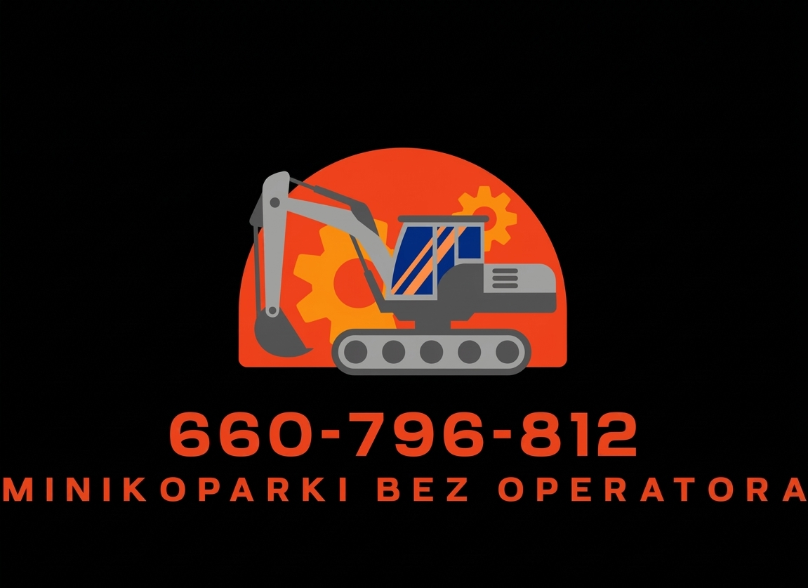

Minikoparki typu Yanmar
Wysoka jakość i niezawodność. Doskonałe do prac w trudnym terenie oraz w miejscach o ograniczonej przestrzeni.

Wynajem sprzętu budowlanego w Lubinie i okolicach Dolnego Śląska
Lubin i okolice, Dolny Śląsk
Elastyczne warunki wynajmu, dostawa na plac budowy oraz wsparcie w przygotowaniu sprzętu. Nowoczesny park maszynowy dla budownictwa i terenów zielonych.

Wynajmujemy sprawne minikoparki idealne do robót budowlanych, przygotowania ogrodów i prac drogowych. Sprzęt jest dostępny bez operatora, a przed wydaniem otrzymasz praktyczny instruktaż obsługi.
Wysoka jakość i niezawodność. Doskonałe do prac w trudnym terenie oraz w miejscach o ograniczonej przestrzeni.
Zapewniamy przewóz maszyny na teren budowy w obrębie Lubina, Polkowic, Głogowa i pobliskich miejscowości.
Maszyny wyposażone w łyżki, młot hydrauliczny oraz dodatkowe osprzęty dla prac w ziemi, ogrodzie i fundamentach.
Skontaktuj się telefonicznie lub mailowo, aby zaplanować wynajem minikoparki dopasowany do Twojego projektu.